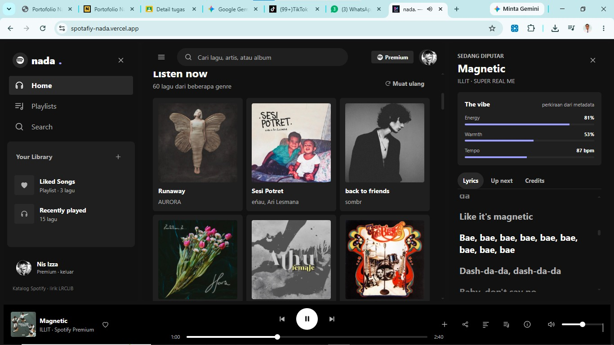
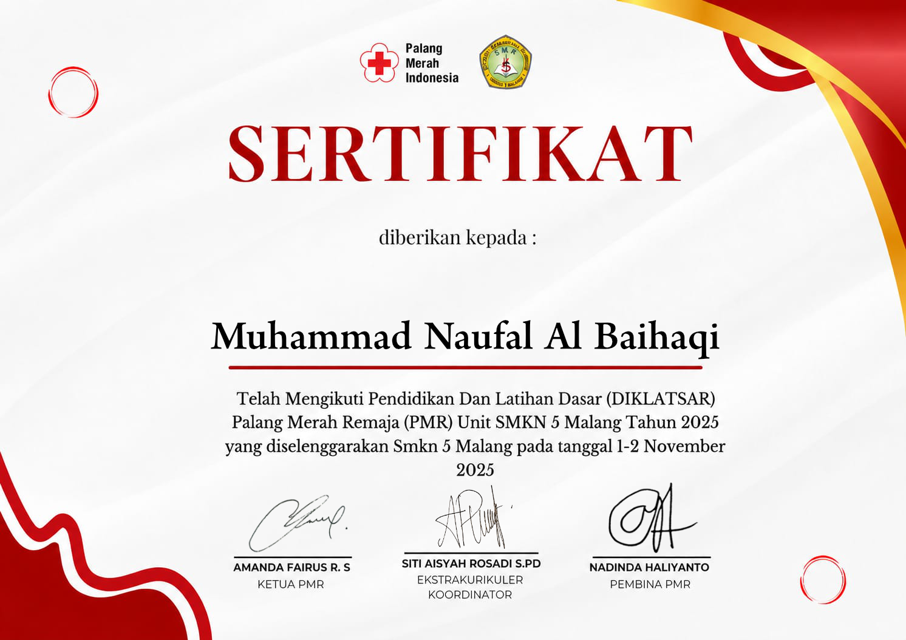

Motion Graphic
Eksperimen motion graphic pakai Alight Motion. Dengan mengatur layer, transisi, dan timing animasi teks serta gambar supaya presisi.
- Alight Motion
RPL Vohisma
Saya siswa RPL di SMKN 5 Malang. Saat ini saya belajar HTML, CSS, Bootstrap, GitHub, PHP, dan Python—sambil terus mencoba hal baru.
About
Saya adalah pelajar smkn 5 malang yang tertarik masuk ke dunia pemograman sejak smp,Saat ini saya masih mengasah skill saya di bidang fullstack developer
Saat ini, saya juga tertarik dengan game development dan cyber security, sekaligus terus mengeksplorasi web dan mobile development melalui berbagai project kecil.
Yang sedang saya eksplorasi
Skills
Yang saya pelajari dan gunakan untuk membangun project kecil.
 CSS
CSS
 JavaScript
JavaScript
 Bootstrap
Bootstrap
 Tailwind
Tailwind
 PostgreSQL
PostgreSQL
 Python
Python
 Dart
Flutter
Dart
Flutter
 Vercel
Figma
Alight Motion
Vercel
Figma
Alight Motion
Karya
Eksperimen dan project kecil yang saya kerjakan.
Eksperimen motion graphic pakai Alight Motion. Dengan mengatur layer, transisi, dan timing animasi teks serta gambar supaya presisi.

Pemutar musik player mirip seperti spotify dengan menggunakan API Spotify Premium,Sebelum Pengguna mendengarkan music Di wajibkan login akun spotify premium

Eksperimen menghubungkan HP Android ke laptop lewat ADB tanpa kabel. Layar HP ditampilkan dan dikendalikan lewat scrcpy.

Saya memakai ADB untuk mengelola aplikasi bawaan Android TV Stick. Aplikasi yang tidak diperlukan dinonaktifkan, lalu dicoba launcher alternatif agar tampilannya lebih sederhana.
# Shape of My Heart - Backstreet Boys (climax)
# timing asli: lirik pertama muncul 14.9 detik setelah play(start=143)
import sys
import time
import pygame
lyrics = [
("I'm lookin' back on things I've done", 14.9, 3.5),
("I never wanna play the same old part", 20.3, 3.8),
("I'll keep you in the dark", 25.7, 2.8),
("Now let me show you the shape of my heart", 29.9, 3.5),
# ... bagian reff & outro
]
def type_line_synced(text, duration):
char_delay = duration / max(len(text), 1)
for ch in text:
sys.stdout.write(ch)
sys.stdout.flush()
time.sleep(char_delay)
print()
pygame.mixer.init()
pygame.mixer.music.load("lagu.mp3")
pygame.mixer.music.play(start=143) # masuk ke bridge
for text, start, duration in lyrics:
type_line_synced(text, duration)
Script Python yang mengetik lirik lagu "Shape of My Heart" di CMD secara sinkron dengan audio. Di web ini, tombol Jalankan kode memutar lagu dari detik ke-143 lalu menampilkan liriknya.
Python
Activities
Selain saya belajar di dunia programing saya juga mengasah skill saya di Palang Merah Remaja (PMR).

Berpartisipasi dalam kegiatan demonstrasi ekstrakulikuler untuk PMR kepada siswa.

Mengikuti Pendidikan dan Pelatihan Dasar PMR kepalangmerahan, kerja sama serta pertolongan pertama.

Mengikuti kegiatan latihan gabungan PMR se-Kota Malang untuk mengembangkan keterampilan kepalangmerahan, kerja sama tim, dan pengalaman organisasi.
Riwayat sekolah
Langkah pendidikan saya dari SD sampai SMK.

Menempuh pendidikan dasar di SDN Purwantoro 2 Malang selama enam tahun.

Melanjutkan pendidikan menengah pertama di SMP Negeri 16 Malang.

Sekarang bersekolah di SMKN 5 Malang jurusan Rekayasa Perangkat Lunak.
Pencapaian
Beberapa sertifikat dan pencapaian yang sudah saya peroleh.

Sertifikat pelatihan Diklatsar PMR yang diikuti di SMKN 5 Malang.
Yuk ngobrol
Punya ide atau pertanyaan? Jangan ragu untuk menghubungi saya.